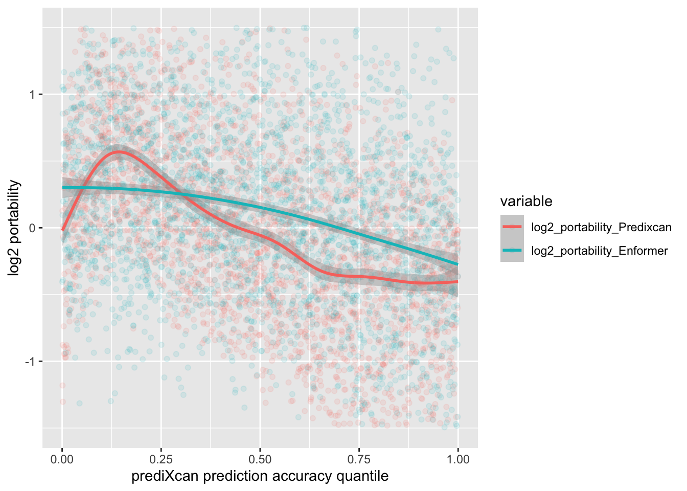

Code
library(tidyr)
library(ggplot2)
library(ggrepel)
library(ggpmisc)
library(readr)
library(stringr)
library(ggExtra)
library(preprocessCore)
library(reshape2)
library(patchwork)library(tidyr)
library(ggplot2)
library(ggrepel)
library(ggpmisc)
library(readr)
library(stringr)
library(ggExtra)
library(preprocessCore)
library(reshape2)
library(patchwork)Load the raw expression datasets
dset_dir <- file.path("/Users/saideepgona/Library/CloudStorage/Box-Box/imlab-data/data-Github/analysis-Sai/enformer_geuvadis/enformer_portability_analysis")
# Load GEUVADIS
geuvadis_full <- read_delim(file.path(dset_dir,"GD462.GeneQuantRPKM.50FN.samplename.resk10.txt"))
geuvadis_genes_symbols <- sapply(str_split(geuvadis_full$Gene_Symbol, "\\."),`[`,1)
geuvadis <- as.data.frame(geuvadis_full[,5:ncol(geuvadis_full)])
rownames(geuvadis) <- geuvadis_genes_symbols
# Load predixcan expression
predixcan_full <- read_delim(file.path(dset_dir,"predixcan_expression.txt"))
predixcan <- as.data.frame(predixcan_full[,3:ncol(predixcan_full)])
rownames(predixcan) <- predixcan_full$gene_names_proper
# Load enformer
enformer_haplo1 <- as.data.frame(read_csv(file.path(dset_dir,"CAGE_lcl_enformer_geuvadis_canonical_haplo1_filtered.csv")))
rownames(enformer_haplo1) <- enformer_haplo1$...1
enformer_haplo1$...1 <- NULL
# rownames(enformer_haplo1) <- enformer_haplo1$X
# enformer_haplo1$X <- NULL
enformer_haplo2 <- as.data.frame(read_csv(file.path(dset_dir,"CAGE_lcl_enformer_geuvadis_canonical_haplo2_filtered.csv")))
rownames(enformer_haplo2) <- enformer_haplo2$X
enformer_haplo2$...1 <- NULL
enf_genes_symbols <- sapply(str_split(rownames(enformer_haplo1), "\\."),`[`,1)
enformer <- (enformer_haplo1 + enformer_haplo2)
enformer_norm <- as.data.frame(t(scale(t(enformer))))
enformer <- enformer_norm
rownames(enformer) <- enf_genes_symbolsLoad corresponding metadata files to help with analysis
metadata_dir = "/Users/saideepgona/Library/CloudStorage/Box-Box/imlab-data/data-Github/analysis-Sai/metadata"
individual_metadata <- read.delim(file.path(metadata_dir,"igsr_samples.tsv"))
rownames(individual_metadata) <- individual_metadata$Sample.name
gene_metadata <- read.csv2(file.path(metadata_dir,"gene_metadata_full.csv"),row.names = 1)The given datasets may not be consistent in terms of the sets of individuals and genes they contain. We can only correlate and compare the ones in common, so create those intersections here.
#| label: Make common gene, individual subsets between datasets
# enformer <- enformer_no_zero
# geuvadis <- geuvadis
# predixcan <- predixcan
gp_ind <- intersect(colnames(geuvadis), colnames(predixcan))
ge_ind <- intersect(colnames(geuvadis), colnames(enformer))
all_three_ind <- intersect(gp_ind,ge_ind)
gp_genes <- intersect(rownames(geuvadis), rownames(predixcan))
ge_genes <- intersect(rownames(geuvadis), rownames(enformer))
ep_genes <- intersect(rownames(enformer), rownames(predixcan))
all_three_genes <- intersect(gp_genes, ge_genes)
# USING NON-IMPUTED VALUES FOR PREDIXCAN
#
geuvadis_compare <- geuvadis[all_three_genes, all_three_ind]
predixcan_compare <- predixcan[all_three_genes,all_three_ind]
enformer_compare <- enformer[all_three_genes, all_three_ind]
gene_meta_compare <- gene_metadata[all_three_genes,]
individual_metadata_compare <- individual_metadata[rownames(individual_metadata) %in% all_three_ind,]
# USING IMPUTED VALUES FOR PREDIXCAN
# ge_genes_not_predixcan <- ge_genes[!(ge_genes %in% rownames(predixcan))]
#
# geuvadis_compare <- geuvadis[ge_genes_not_predixcan, all_three_ind]
#
# predixcan_compare <- predixcan[ge_genes_not_predixcan,all_three_ind]
# predixcan_compare[is.na(predixcan_compare)] <- 1e-5
#
# enformer_compare <- data.frame(enformer[ge_genes_not_predixcan, all_three_ind])
# #
# #
# all_three_genes <- ge_genes_not_predixcan
# log values
# geuvadis_compare <- log(geuvadis_compare+1)
# predixcan_compare <- log(predixcan_compare+1)
# enformer_compare <- log(enformer_compare+1)We can explore the population breakdown of the geuvadis samples
ggplot(individual_metadata_compare) + geom_bar(aes(x=Superpopulation.code, fill=Population.code)) ggplot(individual_metadata_compare) + geom_bar(aes(x=Superpopulation.name, fill=Population.name)) Lot’s plot ERAP2 Enformer vs. Geuvadis as a check
# allele_count_df <- as.data.frame(allele_count_df)
# splice_geno <- c()
# for (ind in all_three_ind) {
# if (ind %in% colnames(allele_count_df)) {
# splice_geno <- c(splice_geno, allele_count_df["96900192",ind])
# } else {
# splice_geno <- c(splice_geno, NA)
# }
# }
#
# erap2_plot <- data.frame(geuvadis=as.numeric(geuvadis_compare["ENSG00000164308",]), enformer=as.numeric(enformer_compare["ENSG00000164308",]), splice_geno=splice_geno)
#
# ggplot(erap2_plot) + geom_point(aes(x=geuvadis,y=enformer, col = splice_geno))For each gene, compute the cross-individual correlation between geuvadis and enformer, as well as between geuvadis and predixcan. Store per gene values as rows in a table.
corr_gene_across_inds <- function(df_1,df_2) {
df_1 <- scale(df_1)
df_2 <- scale(df_2)
corrs <- sapply(seq.int(dim(df_1)[1]), function(i) cor(as.numeric(df_1[i,]), as.numeric(df_2[i,])))
names(corrs) <- rownames(df_1)
return(corrs)
}
gp_corrs <- corr_gene_across_inds(geuvadis_compare, predixcan_compare)
gp_corrs_all <- gp_corrs
ge_corrs <- corr_gene_across_inds(geuvadis_compare, enformer_compare)
ge_corrs_all <- ge_corrs
corrs_df <- data.frame(gp=gp_corrs, ge=ge_corrs, ge_abs = abs(ge_corrs),genes=all_three_genes, gene_names=rownames(gene_meta_compare), gene_h2=gene_meta_compare$h2_WholeBlood_TS, high_h2 = gene_meta_compare$h2_WholeBlood_TS > 0.1, strand = gene_meta_compare$strand, ref_gene_ancestry=gene_meta_compare$best_ancestry)?@fig-prediction-heritability
#| label: fig-prediction_heritability-1
#| layout-ncol: 2
#| fig-cap: "Plot of prediction correlations against heritability per gene"
#| fig-subcap:
#| - "Predixcan predictions"
#| - "Enformer predictions"
#| fig-width: 5
#| fig-height: 3
p1 <- ggplot(corrs_df,aes(x=gp,y=gene_h2)) + geom_point(aes(x=gp,y=gene_h2), alpha=0.5) + xlim(-0.7,0.7) + ylim(-0.7,0.7) +
# geom_hline(xintercept=0) + geom_vline(yintercept=0)
xlab("geuvadis vs. predixcan") + ylab("heritability") +
geom_hline(aes(yintercept = 0)) +
geom_vline(aes(xintercept = 0)) +
geom_smooth(formula = y~x, se = F, color="red")
ggExtra::ggMarginal(p1, type = "histogram", binwidth=0.025)
p2 <- ggplot(corrs_df,aes(x=ge_abs,y=gene_h2)) + geom_point(aes(x=ge_abs,y=gene_h2), alpha=0.5) + xlim(-0.7,0.7) + ylim(-0.7,0.7) +
# geom_hline(xintercept=0) + geom_vline(yintercept=0)
xlab("geuvadis vs. enformer") + ylab("heritability") +
geom_hline(aes(yintercept = 0)) +
geom_vline(aes(xintercept = 0)) +
geom_smooth(formula = y~x, se = F, color="red")
ggExtra::ggMarginal(p2, type = "histogram", binwidth=0.025)?@fig-prediction-heritability-2
#| label: fig-prediction_heritability-2
#| layout-ncol: 2
#| fig-cap: "Plot of prediction correlations against heritability per gene"
#| fig-subcap:
#| - "Predixcan predictions"
#| - "Enformer predictions"
#| fig-width: 5
#| fig-height: 3
p1 <- ggplot(corrs_df,aes(x=gp,y=gene_h2)) + geom_point(aes(x=gp,y=gene_h2), alpha=0.5) + xlim(-0.7,0.7) + ylim(-0.7,0.7) +
# geom_hline(xintercept=0) + geom_vline(yintercept=0)
xlab("geuvadis vs. predixcan correlation across individuals") + ylab("gene heritability") +
geom_hline(aes(yintercept = 0)) +
geom_vline(aes(xintercept = 0)) +
geom_smooth(formula = y~x, se = F, color="red")
ggExtra::ggMarginal(p1, type = "histogram", binwidth=0.025)
p2 <- ggplot(corrs_df,aes(x=ge,y=gene_h2)) + geom_point(aes(x=ge_abs,y=gene_h2), alpha=0.5) + xlim(-0.7,0.7) + ylim(-0.7,0.7) +
# geom_hline(xintercept=0) + geom_vline(yintercept=0)
xlab("geuvadis vs. enformer correlation across individuals") + ylab("gene heritability") +
geom_hline(aes(yintercept = 0)) +
geom_vline(aes(xintercept = 0)) +
geom_smooth(formula = y~x, se = F, color="red")
ggExtra::ggMarginal(p2, type = "histogram", binwidth=0.025)p1 <- ggplot(corrs_df,aes(x=gp,y=ge)) + geom_point(aes(x=gp,y=ge, colour=gene_h2), alpha=0.5) + geom_text_repel(aes(x=gp,y=ge,label=gene_names)) + xlim(-0.7,0.7) + ylim(-0.7,0.7) +
# geom_hline(xintercept=0) + geom_vline(yintercept=0)
xlab("geuvadis vs. predixcan") + ylab("geuvadis vs. enformer") +
geom_hline(aes(yintercept = 0)) +
geom_vline(aes(xintercept = 0)) +
geom_smooth(method = "lm", formula = y~x, se = F, color="red")
ggExtra::ggMarginal(p1, type = "histogram", binwidth=0.025)
p2 <- ggplot(corrs_df,aes(x=gp,y=ge)) + geom_point(aes(x=gp,y=ge, colour=strand), alpha=0.5) + geom_text_repel(aes(x=gp,y=ge,label=gene_names)) + xlim(-0.7,0.7) + ylim(-0.7,0.7) +
# geom_hline(xintercept=0) + geom_vline(yintercept=0)
xlab("geuvadis vs. predixcan correlation across individuals") + ylab("geuvadis vs. enformer correlation across individuals") +
geom_hline(aes(yintercept = 0)) +
geom_vline(aes(xintercept = 0)) +
geom_smooth(method = "lm", formula = y~x, se = F, color="red")
ggExtra::ggMarginal(p2, type = "histogram", binwidth=0.025, groupFill = TRUE)
p3 <- ggplot(corrs_df,aes(x=gp,y=ge)) + geom_point(aes(x=gp,y=ge, colour=ref_gene_ancestry), alpha=0.5) + geom_text_repel(aes(x=gp,y=ge,label=gene_names)) + xlim(-0.7,0.7) + ylim(-0.7,0.7) +
# geom_hline(xintercept=0) + geom_vline(yintercept=0)
xlab("geuvadis vs. predixcan correlation across individuals") + ylab("geuvadis vs. enformer correlation across individuals") +
geom_hline(aes(yintercept = 0)) +
geom_vline(aes(xintercept = 0)) +
geom_smooth(method = "lm", formula = y~x, se = F, color="red")
ggExtra::ggMarginal(p3, type = "histogram", binwidth=0.025, groupFill = TRUE)#TODO split by ancestry
p1 <- ggplot(corrs_df,aes(x=gp,y=ge_abs)) + geom_point(aes(x=gp,y=ge_abs, colour=gene_h2), alpha=0.5) + geom_text_repel(aes(x=gp,y=ge_abs,label=gene_names)) + xlim(-0.7,0.7) + ylim(-0.7,0.7) +
# geom_hline(xintercept=0) + geom_vline(yintercept=0)
xlab("geuvadis vs. predixcan") + ylab("geuvadis vs. enformer") +
geom_hline(aes(yintercept = 0)) +
geom_vline(aes(xintercept = 0)) +
geom_smooth(method = "lm", formula = y~x, se = F, color="red")
ggExtra::ggMarginal(p1, type = "histogram", binwidth=0.025)
p2 <- ggplot(corrs_df,aes(x=gp,y=ge_abs)) + geom_point(aes(x=gp,y=ge_abs, colour=strand), alpha=0.5) + geom_text_repel(aes(x=gp,y=ge,label=gene_names)) + xlim(-0.7,0.7) + ylim(-0.7,0.7) +
# geom_hline(xintercept=0) + geom_vline(yintercept=0)
xlab("geuvadis vs. predixcan") + ylab("geuvadis vs. enformer") +
geom_hline(aes(yintercept = 0)) +
geom_vline(aes(xintercept = 0)) +
geom_smooth(method = "lm", formula = y~x, se = F, color="red")
ggExtra::ggMarginal(p2, type = "histogram", binwidth=0.025, groupFill = TRUE)Repeat the correlations but only for EUR individuals.
#| EUR comparisons
EUR_inds_all <- individual_metadata_compare[individual_metadata_compare$Superpopulation.code == "EUR",]$Sample.name
EUR_ind <- EUR_inds_all[EUR_inds_all %in% colnames(geuvadis_compare)]
EUR_geuvadis_compare <- geuvadis_compare[,colnames(geuvadis_compare) %in% EUR_ind]
EUR_predixcan_compare <- predixcan_compare[,colnames(predixcan_compare) %in% EUR_ind]
EUR_enformer_compare <- enformer_compare[,colnames(enformer_compare) %in% EUR_ind]
# Correlation across genes
# gp_corrs <- corr_ind_across_genes(data.frame(t(EUR_geuvadis_compare)), data.frame(t(EUR_predixcan_compare)))
ge_corrs <- c()
for (i in 1:ncol(EUR_enformer_compare)) {
ge_corrs <- c(ge_corrs, cor(EUR_geuvadis_compare[,i], EUR_enformer_compare[,i]))
}
# Correlation across individuals
gp_corrs <- corr_gene_across_inds(EUR_geuvadis_compare, EUR_predixcan_compare)
gp_corrs_EUR <- gp_corrs
ge_corrs <- corr_gene_across_inds(EUR_geuvadis_compare, EUR_enformer_compare)
ge_corrs_EUR <- ge_corrs
corrs_df <- data.frame(gp=gp_corrs, ge=ge_corrs, genes=all_three_genes , gene_names=gene_meta_compare$gene_name)ggplot(corrs_df, aes(x=gp,y=ge)) + geom_point(aes(x=gp,y=ge)) + geom_text_repel(aes(x=gp,y=ge,label=gene_names)) + ggtitle("EUR: Correlation of each gene across all individuals b/w paired datasets") +
xlab("geuvadis vs. predixcan") + ylab("geuvadis vs. enformer")+xlim(-1,1) + ylim(-1,1) +
geom_hline(aes(yintercept = 0)) +
geom_vline(aes(xintercept = 0))+
geom_smooth(method = "lm", formula = y~x, se = F)
ggplot(corrs_df, aes(x=gp,y=ge)) + geom_hex(aes(x=gp,y=ge)) + ggtitle("EUR: Correlation of each gene across all individuals b/w paired datasets") + xlab("geuvadis vs. predixcan") + ylab("geuvadis vs. enformer")+xlim(-1,1) + ylim(-1,1) +
geom_hline(aes(yintercept = 0)) +
geom_vline(aes(xintercept = 0))+
geom_smooth(method = "lm", formula = y~x, se = F)Repeat the correlations but only for AFR individuals.
AFR_inds_all <- individual_metadata_compare[individual_metadata_compare$Superpopulation.code == "AFR",]$Sample.name
AFR_ind <- AFR_inds_all[AFR_inds_all %in% colnames(geuvadis_compare)]
AFR_geuvadis_compare <- geuvadis_compare[,colnames(geuvadis_compare) %in% AFR_ind]
AFR_predixcan_compare <- predixcan_compare[,colnames(predixcan_compare) %in% AFR_ind]
AFR_enformer_compare <- enformer_compare[,colnames(enformer_compare) %in% AFR_ind]
# Correlation across individuals
gp_corrs <- corr_gene_across_inds(AFR_geuvadis_compare, AFR_predixcan_compare)
gp_corrs_AFR <- gp_corrs
ge_corrs <- corr_gene_across_inds(AFR_geuvadis_compare, AFR_enformer_compare)
ge_corrs_AFR <- ge_corrs
corrs_df <- data.frame(gp=gp_corrs, ge=ge_corrs, genes=all_three_genes, gene_names=gene_meta_compare$gene_name)ggplot(corrs_df, aes(x=gp,y=ge)) + geom_point(aes(x=gp,y=ge)) + geom_text_repel(aes(x=gp,y=ge,label=gene_names)) + ggtitle("AFR: Correlation of each gene across all individuals b/w paired datasets") +
xlab("geuvadis vs. predixcan") + ylab("geuvadis vs. enformer")+xlim(-1,1) + ylim(-1,1) +
geom_hline(aes(yintercept = 0)) +
geom_vline(aes(xintercept = 0)) +
geom_smooth(method = "lm", formula = y~x, se = F)
ggplot(corrs_df, aes(x=gp,y=ge)) + geom_hex(aes(x=gp,y=ge)) + ggtitle("AFR: Correlation of each gene across all individuals b/w paired datasets") +
xlab("geuvadis vs. predixcan") + ylab("geuvadis vs. enformer")+xlim(-1,1) + ylim(-1,1) +
geom_hline(aes(yintercept = 0)) +
geom_vline(aes(xintercept = 0)) +
geom_smooth(method = "lm", formula = y~x, se = F)It seems that among population subsets, there are broadly similar correlation patterns.Let’s investigate further:
Ultimately, we would like to know how well the different prediction methods have different relative performance between population groups.
ge_corrs_df = data.frame(EUR=ge_corrs_EUR, AFR=ge_corrs_AFR)
xlab_str = "geuvadis vs predixcan"
ylab_str = "geuvadis vs enformer"
# Comment for using null distribution
# mm=2900
# nn=60
# gp_corrs_EUR = tanh(rnorm(mm)/sqrt(nn-3))
# gp_corrs_AFR = tanh(rnorm(mm)/sqrt(nn-3))
# xlab_str = ""qqplot(gp_corrs_EUR^2, ge_corrs_EUR^2, main="EUR: Predixcan vs enformer", xlab = "geuvadis vs predixcan correlation across individuals", ylab = "geuvadis vs. enformer correlation across individuals", col="blue") ; abline(0,1)
qqplot(gp_corrs_AFR^2, ge_corrs_AFR^2, main="AFR: predixcan vs. enformer", xlab = "geuvadis vs predixcan correlation across individuals", ylab = "geuvadis vs. enformer correlation across individuals", col = "red") ; abline(0,1)qqplot(ge_corrs_EUR^2, ge_corrs_AFR^2, main="enformer: EUR vs. AFR") ; abline(0,1)
plot(ge_corrs_EUR^2, ge_corrs_AFR^2); abline(0,1)
plot(ge_corrs_EUR, ge_corrs_AFR)
qqplot(gp_corrs_EUR^2, gp_corrs_AFR^2, main="predixcan: EUR vs. AFR") ; abline(0,1)
plot(gp_corrs_EUR^2, gp_corrs_AFR^2); abline(0,1)We now compare the portability of Enformer vs. Predixcan between populations.
More formally, we define portability here as:
\[ P_{g} = \frac{|r_Y| + \epsilon}{|r_C| + \epsilon} \] Where \(P_{g}\) is the portability for gene \(g\), \(r_Y,r_C\) are the correlations of gene expression for gene \(g\) across AFR, EUR individuals respectively. \(\epsilon = 0.1\) here for numerical stability.
epsi=0.1
portability_Enformer = ( abs(ge_corrs_AFR) + epsi ) / ( abs(ge_corrs_EUR) + epsi )
portability_Predixcan = ( abs(gp_corrs_AFR) + epsi )/ ( abs(gp_corrs_EUR) + epsi )We can now plot the portability statistics as a qqplot.
portability_df <- data.frame(portability_Predixcan = portability_Predixcan, portability_Enformer = portability_Enformer, abs_log2_portability_Predixcan = abs(log2(portability_Predixcan)), abs_log2_portability_Enformer = abs(log2(portability_Enformer)), log2_portability_Predixcan = log2(portability_Predixcan), log2_portability_Enformer = log2(portability_Enformer), ge_corrs_AFR = ge_corrs_AFR, gp_corrs_AFR=gp_corrs_AFR, ge_corrs_EUR = ge_corrs_EUR, gp_corrs_EUR=gp_corrs_EUR, ge_corrs_all = ge_corrs_all, gp_corrs_all)
qqplot(portability_Predixcan,portability_Enformer, main="Portability Enformer vs. Predixcan",xlab = "Predixcan Portability", ylab = "Enformer portability") ; abline(0,1)qqplot(log2(portability_Predixcan),log2(portability_Enformer), main="Portability Enformer vs. Predixcan absolute log2",xlab = "Predixcan log2(Portability)", ylab = "Enformer log2(portability)") ; abline(0,1)qqplot(abs(log2(portability_Predixcan)),abs(log2(portability_Enformer)), main="Portability Enformer vs. Predixcan absolute log2",xlab = "Predixcan abs(log2(Portability))", ylab = "Enformer abs(log2(portability))") ; abline(0,1)boxplot(log2(portability_Predixcan),log2(portability_Enformer))mean(log2(portability_Predixcan))[1] -0.04259071median(log2(portability_Predixcan))[1] -0.02636951mean(log2(portability_Enformer), na.rm = TRUE)[1] 0.1096916median(log2(portability_Enformer), na.rm = TRUE)[1] 0.1032937portability_df_na <- portability_df[!is.na(portability_df$ge_corrs_all),]
mean_predixcan <- c()
mean_enformer <- c()
num_genes <- c()
for (x in seq(-0.5,0.95,0.05)) {
portability_cutoff_gp <- portability_df_na[portability_df_na$gp_corrs_all > x & portability_df_na$gp_corrs_all < (x+0.05), ]
mean_predixcan <- c(mean_predixcan,mean(portability_cutoff_gp$log2_portability_Predixcan))
mean_enformer <- c(mean_enformer,mean(portability_cutoff_gp$log2_portability_Enformer, na.rm=TRUE))
num_genes <- c(num_genes, nrow(portability_cutoff_gp))
}
means_df <- data.frame(mean_predixcan=mean_predixcan,mean_enformer=mean_enformer, dif=mean_predixcan-mean_enformer,cutoffs=seq(-0.5,0.95,0.05), num_genes=num_genes)
means_df <- means_df[!is.na(means_df$mean_predixcan),]
means_df_melt <- melt(means_df, measure.vars = c("mean_predixcan","mean_enformer"))
ggplot(means_df_melt) + geom_line(aes(x=cutoffs,y=value,color=variable))ggplot(means_df) + geom_line(aes(x=cutoffs,y=num_genes))portability_df_na_sorted <- portability_df_na[order(portability_df_na$gp_corrs_all),]
portability_df_na_sorted$order <- seq(1,nrow(portability_df_na_sorted))
portability_df_na_sorted$quantile <- seq(1,nrow(portability_df_na_sorted))/nrow(portability_df_na_sorted)
portability_df_na_sorted_melt <- melt(portability_df_na_sorted, measure.vars = c("log2_portability_Predixcan","log2_portability_Enformer"))
ggplot(portability_df_na_sorted_melt, aes(x=quantile,y=value,color=variable)) + geom_point(alpha=0.1) + stat_smooth(n=2000, span=.25) + ylim(c(-1.5,1.5)) + xlab("prediXcan prediction accuracy quantile") + ylab("log2 portability") 
ggplot(portability_df_na_sorted_melt) + geom_point(aes(x=gp_corrs_all,y=value,color=variable))ggplot(portability_df_na_sorted_melt) + geom_point(aes(y=quantile,x=gp_corrs_all)) + xlab("prediXcan prediction accuracy") + ylab("prediXcan prediction accuracy quantile") middle_quantile <- portability_df_na_sorted[portability_df_na_sorted$quantile > 0.25 & portability_df_na_sorted$quantile < 0.75, ]
mean(middle_quantile$log2_portability_Predixcan)[1] -0.06367863mean(middle_quantile$log2_portability_Enformer)[1] 0.1634003upper_quantile <- portability_df_na_sorted[portability_df_na_sorted$quantile > 0.5, ]
mean(upper_quantile$log2_portability_Predixcan)[1] -0.3897802mean(upper_quantile$log2_portability_Enformer)[1] -0.06843718# length(intersect(ge_025_genes, gp_025_genes))
#
# portability_0.25_ge <- portability_df_na[abs(portability_df_na$ge_corrs_all) > 0.5, ]
#
# mean(portability_0.25_ge$log2_portability_Predixcan)
# mean(portability_0.25_ge$log2_portability_Enformer, na.rm=TRUE)
#
# portability_0.25_gp <- portability_df_na[portability_df_na$gp_corrs_all > 0.1, ]
#
# mean(portability_0.25_gp$log2_portability_Predixcan)
# mean(portability_0.25_gp$log2_portability_Enformer, na.rm=TRUE)portability_p1 <- ggplot(portability_df) + geom_point(aes(x=log2_portability_Predixcan,y=log2_portability_Enformer,color=gp_corrs_AFR))
ggExtra::ggMarginal(portability_p1, type="densigram")ggplot(portability_df) + geom_hex(aes(x=portability_Predixcan,y=portability_Enformer))
portability_p2 <- ggplot(portability_df, aes(x=gp_corrs_AFR^2,y=gp_corrs_EUR^2)) + geom_point()+ geom_smooth(formula = y~x, se = F, color="red")
ggExtra::ggMarginal(portability_p2, type="densigram")
portability_p3 <- ggplot(portability_df, aes(x=log2_portability_Enformer,y=gp_corrs_EUR)) + geom_point()+ geom_smooth(formula = y~x, se = F, color="red")
ggExtra::ggMarginal(portability_p3, type="densigram")
portability_p4 <- ggplot(portability_df, aes(x=log2_portability_Predixcan,y=gp_corrs_EUR)) + geom_point()+ geom_smooth(formula = y~x, se = F, color="red")
ggExtra::ggMarginal(portability_p4, type="densigram")What if we stratify the portability into genes depending on their reference genome ancestral origin?
AFR_genes <- gene_meta_compare[gene_meta_compare$best_ancestry == "AFR",]
EUR_genes <- gene_meta_compare[gene_meta_compare$best_ancestry == "EUR",]
AFR_geuvadis_compare_AFR <- AFR_geuvadis_compare[rownames(AFR_genes),]
AFR_geuvadis_compare_EUR <- AFR_geuvadis_compare[rownames(EUR_genes),]
AFR_predixcan_compare_AFR <- AFR_predixcan_compare[rownames(AFR_genes),]
AFR_predixcan_compare_EUR <- AFR_predixcan_compare[rownames(EUR_genes),]
AFR_enformer_compare_AFR <- AFR_enformer_compare[rownames(AFR_genes),]
AFR_enformer_compare_EUR <- AFR_enformer_compare[rownames(EUR_genes),]
EUR_geuvadis_compare_AFR <- EUR_geuvadis_compare[rownames(AFR_genes),]
EUR_geuvadis_compare_EUR <- EUR_geuvadis_compare[rownames(EUR_genes),]
EUR_predixcan_compare_AFR <- EUR_predixcan_compare[rownames(AFR_genes),]
EUR_predixcan_compare_EUR <- EUR_predixcan_compare[rownames(EUR_genes),]
EUR_enformer_compare_AFR <- EUR_enformer_compare[rownames(AFR_genes),]
EUR_enformer_compare_EUR <- EUR_enformer_compare[rownames(EUR_genes),]
# Correlations between enformer and geuvadis subsets
AFR_ge_corrs_AFR <- corr_gene_across_inds(AFR_geuvadis_compare_AFR, AFR_enformer_compare_AFR)
AFR_ge_corrs_EUR <- corr_gene_across_inds(AFR_geuvadis_compare_EUR, AFR_enformer_compare_EUR)
EUR_ge_corrs_AFR <- corr_gene_across_inds(EUR_geuvadis_compare_AFR, EUR_enformer_compare_AFR)
EUR_ge_corrs_EUR <- corr_gene_across_inds(EUR_geuvadis_compare_EUR, EUR_enformer_compare_EUR)
# Correlations between predixcan and geuvadis subsets
AFR_gp_corrs_AFR <- corr_gene_across_inds(AFR_geuvadis_compare_AFR, AFR_predixcan_compare_AFR)
AFR_gp_corrs_EUR <- corr_gene_across_inds(AFR_geuvadis_compare_EUR, AFR_predixcan_compare_EUR)
EUR_gp_corrs_AFR <- corr_gene_across_inds(EUR_geuvadis_compare_AFR, EUR_predixcan_compare_AFR)
EUR_gp_corrs_EUR <- corr_gene_across_inds(EUR_geuvadis_compare_EUR, EUR_predixcan_compare_EUR)epsi=0.1
portability_Enformer_AFR = ( abs(AFR_ge_corrs_AFR) + epsi ) / ( abs(EUR_ge_corrs_AFR) + epsi )
portability_Predixcan_AFR = ( abs(AFR_gp_corrs_AFR) + epsi ) / ( abs(EUR_gp_corrs_AFR) + epsi )
portability_Enformer_EUR = ( abs(AFR_ge_corrs_EUR) + epsi ) / ( abs(EUR_ge_corrs_EUR) + epsi )
portability_Predixcan_EUR = ( abs(AFR_gp_corrs_EUR) + epsi ) / ( abs(EUR_gp_corrs_EUR) + epsi )qqplot(EUR_ge_corrs_EUR^2, AFR_ge_corrs_AFR^2, main="enformer: EUR vs. AFR") ; abline(0,1)
qqplot(EUR_ge_corrs_EUR^2, EUR_ge_corrs_AFR^2, main="enformer: EUR vs. AFR") ; abline(0,1)
qqplot(AFR_ge_corrs_AFR^2, EUR_ge_corrs_AFR^2, main="enformer: EUR vs. AFR") ; abline(0,1)
qqplot(AFR_ge_corrs_AFR^2, EUR_ge_corrs_AFR^2, main="enformer: EUR vs. AFR") ; abline(0,1)
qqplot(EUR_gp_corrs_EUR^2, EUR_ge_corrs_EUR^2, main="European individuals predixcan vs enformer for European reference genes", xlab = "geuvadis vs predixcan", ylab = "geuvadis vs. enformer") ; abline(0,1)
qqplot(AFR_gp_corrs_AFR^2, AFR_ge_corrs_AFR^2, main="African individuals predixcan vs enformer for African reference genes", xlab = "geuvadis vs predixcan", ylab = "geuvadis vs. enformer") ; abline(0,1)qqplot(portability_Predixcan_AFR,portability_Enformer_AFR, main="Portability Enformer vs. Predixcan in AFR reference genes",xlab = "Predixcan Portability", ylab = "Enformer portability") ; abline(0,1)qqplot(portability_Predixcan_EUR,portability_Enformer_EUR, main="Portability Enformer vs. Predixcan in EUR reference genes",xlab = "Predixcan Portability", ylab = "Enformer portability") ; abline(0,1)